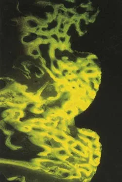
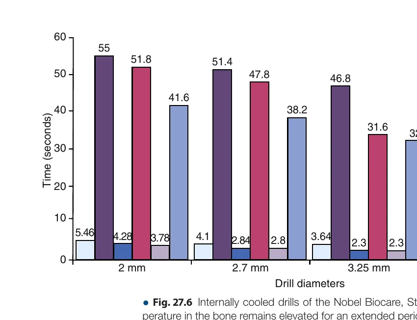

نسخه استخراجشده؛ ترجمه یا تأیید علمی انجام نشده است. وضعیت: captured
کل این درس روی یک یافتهی کلاسیک بنا شده. مطالعات حیوانی نشان دادهاند مرگ سلول استخوانی رخ میدهد وقتی:
دمای ۴۰ درجه به مدت ۷ دقیقه اعمال شود، یا دمای ۴۷ درجه به مدت ۱ دقیقه.
و نتیجهی مهمتر از خود اعداد: زمان و دما دو عامل بحرانی و بههموابستهاند. یعنی هیچکدام بهتنهایی معنا ندارد. با بالا رفتن دما، مدتی که استخوان میتواند آن دما را تحمل کند بهشدت کوتاه میشود.
و عددی که آستانه را ملموس میکند: کندترین دورها دمای استخوان را به ۴۰ درجه یا بیشتر رساندند — دمایی که ممکن است آستانهی مرگ سلول استخوانی باشد.
و این آسیب بیصداست: حین جراحی درد یا خونریزی خاصی نمیسازد و پیامدش ماهها بعد بهصورت شکست استئواینتگریشن آشکار میشود. تنها سرنخ حین کار، رنگ خردههای استخوان روی مته است: سفید یا قرمز یعنی استخوان زنده؛ بژ یا قهوهای یعنی حرارت بیشازحد و استخوان مرده.
در اسلاید بعد میبینی که یکی از این اعداد، یک باور رایج را وارونه میکند.

بسیاری تصور میکنند دور پایینتر یعنی حرارت کمتر. اما یک مطالعه خلاف این را نشان داده است:
تمام طرحهای مته، کمترین دمای استخوان را در بیشترین دور و بیشترین دما را در کمترین دور ثبت کردند.
نمونهی عددی: متهی خنکشوندهی داخلی در ۱۲۲۵ دور دمای ۴۱ درجه ثبت کرد، در حالی که ۲۵۰۰ دور دمای آمادهسازی را برای تمام قطرهای مته کاهش داد. متههای خنکشوندهی خارجی هم در ۲۵۰۰ دور دماهای پایینتری نسبت به سرعتهای کندتر نشان دادند.
و حرارت انباشته میشود. چون معمولاً دو تا سه مته برای آمادهسازی یک محل به کار میرود، در ۱۲۲۵ دور متهی اول دما را به ۴۱، دومی به ۴۵ و سومی به ۴۹ درجه میرساند — وقتی فاصلهی میان هر مرحله بیش از یک دقیقه نباشد.
به عدد ۴۹ دقت کن: از آستانهی ۴۷ درجه گذشته است. یعنی هیچ متهای بهتنهایی مقصر نیست — توالی سریع است که آستانه را میشکند.
عمق هم عاملی مستقل است: هرچه استئوتومی عمیقتر، خطر شستوشوی ناکافی بیشتر. برای همین روش «رقص استخوان» — ورود و خروج متناوب مته — بهویژه در ناحیهی آپیکال استئوتومی حیاتی است. حرارت بیشتر معمولاً در همان بخش آپیکال تولید میشود، بهویژه در استخوان کورتیکال متراکم. در جراحی فلپلس — بهویژه با گاید متکی بر بافت نرم — رساندن شستوشو به استئوتومی سختتر و خطر گرم شدن استخوان بیشتر است.
و نکتهای که اغلب از قلم میافتد: حرارت با پایان دریل تمام نمیشود. در همان مطالعه ثبت شد که دمای استخوان پس از آمادهسازی محل در استخوان D2 تا ۵۸ ثانیه بالا میماند — و هرچه دور کمتر، این مدت طولانیتر. یعنی وقتی بلافاصله متهی بعدی را وارد میکنی، روی استخوانی کار میکنی که هنوز از مرحلهی قبل داغ است. همین توضیح میدهد چرا فاصلهی میان مراحل اهمیت دارد.
تکنیک رقص استخوان، بهصورت عددی: در استخوان D1، فشار متناوب به مدت ۱ ثانیه داخل استخوان و ۱ تا ۲ ثانیه بیرون از آن، تا شستوشوی خنک بتواند محل را پرفیوز کند.
و یک نکتهی تکمیلی: خنک کردن مایع شستوشو تا ۱۰ درجه گزارش شده که تغییر میانگین دما را به کمتر از ۱ درجه محدود میکند.

نوع سؤال: ساخت کلمه · 3 خانه
حروف منبع: ق · ر · ص